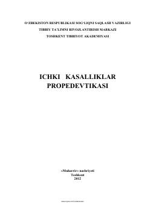

IKTibbiyot oliy o'quv yurtlari talabalari uchun ichki kasalliklar propedevtikasi bo'yicha amaliy qo'llanma.
Ushbu qo'llanma tibbiyot oliy o'quv yurtlari talabalari uchun mo'ljallangan bo'lib, ichki kasalliklar propedevtikasi fanidan bemorlarni ob'ektiv tekshirish ko'nikmalarini o'rgatadi. Kitobda amaliy ko'nikmalar rangli tasvirlar va jadvallar yordamida tushuntirilgan bo'lib, bo'lg'usi shifokorlarga klinik amaliyotda yaqindan yordam beradi.